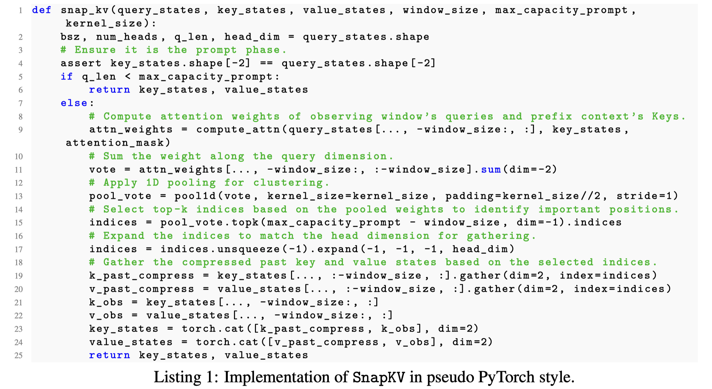

SnapKV: LLM Knows What You are Looking for Before Generation

Abstract
Large Language Models (LLMs) have made remarkable progress in processing extensive contexts, with the Key-Value (KV) cache playing a vital role in enhancing their performance. However, the growth of the KV cache in response to increasing input length poses challenges to memory and time efficiency. To address this problem, this paper introduces SnapKV, an innovative and fine-tuning-free approach that efficiently minimizes KV cache size while still delivering comparable performance in real-world applications. We discover that each attention head in the model consistently focuses on specific prompt attention features during generation. Meanwhile, this robust pattern can be obtained from an 'observation' window located at the end of the prompts. Drawing on this insight, SnapKV automatically compresses KV caches by selecting clustered important KV positions for each attention head. Our approach significantly reduces the growing computational overhead and memory footprint when processing long input sequences. Specifically, SnapKV achieves a consistent decoding speed with a 3.6x increase in generation speed and an 8.2x enhancement in memory efficiency compared to the baseline when processing inputs of 16K tokens. At the same time, it maintains comparable performance to the baseline models across 16 long sequence datasets. Moreover, SnapKV can process up to 380K context tokens on a single A100-80GB GPU using HuggingFace implementation with minor changes, exhibiting only a negligible accuracy drop in the Needle-in-a-Haystack test. Further comprehensive studies suggest SnapKV's potential for practical applications.

根据最近的历史token计算得到attention的score，pool topk选择重要的kv cache，压缩kv cache。